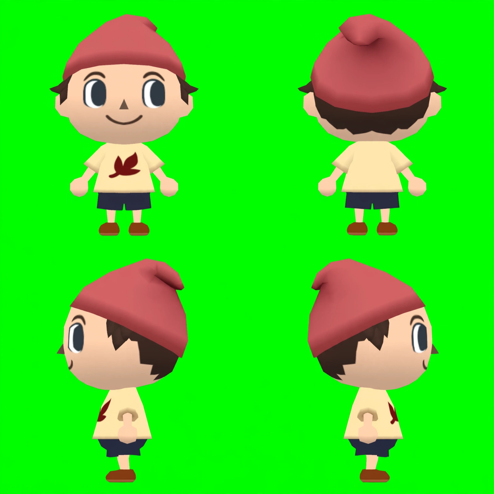

One Muse pass using Nintendo’s official GameCube human references. Front, back, left and right views. This is a motion-study anchor, not an approved final character; the downward camera angle remains less pronounced than the gallery’s.

Proposed Seedance study: eight seconds, 720×720, all four views held in their quadrants. First four seconds walk in place; remaining four look left/right and make a small hand gesture, then settle. Generated motion would be inferred from the stills, not a recreation certified against Nintendo animation. Source and output remain recorded. Muse cost: $0.01. Motion estimate: $0.3402, to be locked by the free plan before submission.